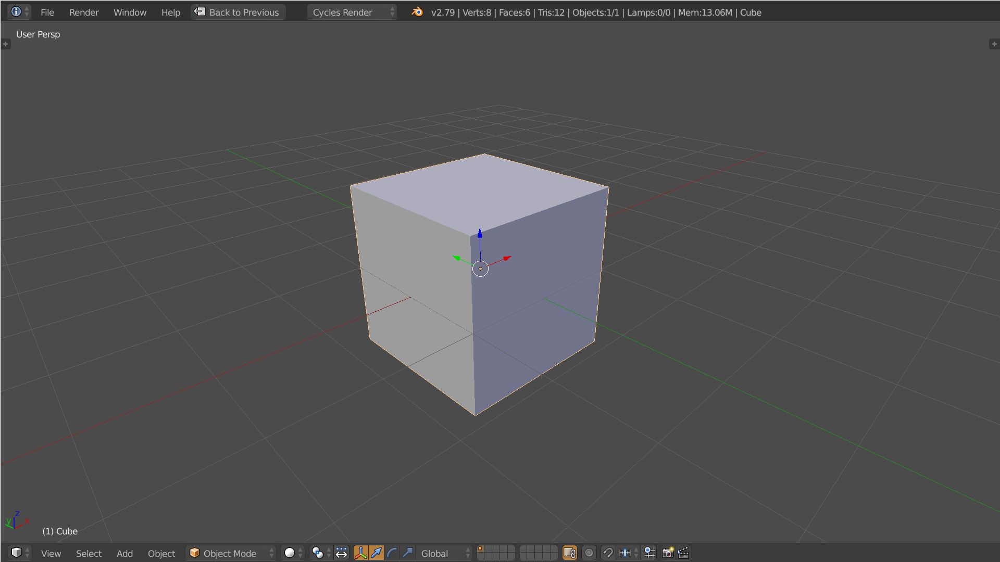

Scene Structure
3D objects inside a virtual scene are mainly made up of two things, a mesh and a transform.
Mesh
A mesh is collection of 3D points (x,y and z values) that are grouped by threes to form visible triangles.
MESH DIAGRAM
Transform
A transform is the position, scale and rotation of an object. By modifiying the values of the transform you can move the mesh around in 3D space.
TRANSFORM DIAGRAM
Camera
A camera is special type of transform that instead of moving a mesh moves the entire scene. The camera can also distort the scene to give the illusion of perspective.
CAMERA DIAGRAM
Initial THREEjs Scene
This is the initial boilerplate code for setting up a THREEjs scene, camera and spinning cube mesh.
var app = {};
window.addEventListener('load', start);
function start()
{
// Keep track of time (we'll use this later on)
app.time = new THREE.Clock();
// Scene
app.scene = new THREE.Scene();
// Camera
var field_of_view = 60;
var aspect_ratio = window.innerWidth / window.innerHeight;
var near_clip = 0.01;
var far_clip = 100;
app.camera = new THREE.PerspectiveCamera(
field_of_view,
aspect_ratio,
near_clip,
far_clip);
// Pull the camera away from the center a bit
app.camera.position.set(0,0,1.5);
// Create a cube
var geometry = new THREE.BoxGeometry(1,1,1);
var material = new THREE.MeshBasicMaterial({color: "#FFFFFF"});
app.cube = new THREE.Mesh(geometry, material);
app.scene.add(cube);
// Create a renderer
var renderer = new THREE.WebGLRenderer();
renderer.setSize(window.innerWidth, window.innerHeight);
document.querySelector('.webgl').appendChild(renderer.domElement);
app.renderer = renderer;
// Start update loop
requestAnimationFrame(update);
}
function update(t)
{
// Continue update loop
requestAnimationFrame(update);
// Spin the cube
app.cube.rotation.x += 0.01;
app.cube.rotation.y += 0.01;
// Tell THREEjs to render the scene using our camera
app.renderer.render(app.scene, app.camera);
}